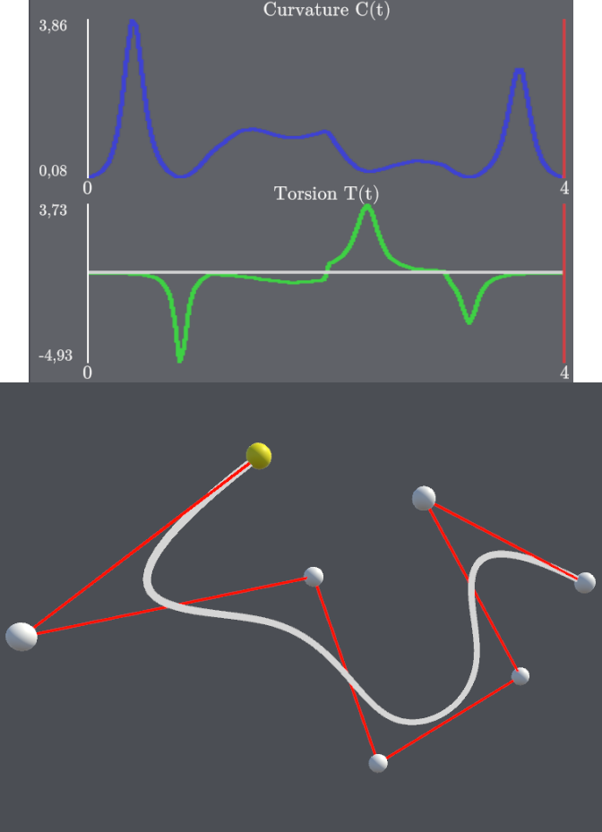
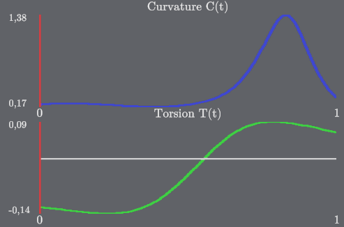

Una curva parametrica nello spazio è una funzione
\[ P:I\subset \mathbb{R} \to \mathbb{E}^3 \]
definita nella forma
\[ P(t) = (x(t), y(t), z(t)), \]
dove \( x(t), y(t), z(t) \) sono funzioni reali del parametro \( t \) definito nell'intervallo reale \( I \).
Una curva si dice regolare se il suo vettore tangente (derivata prima), non si annulla mai:
\[ \dot{P}(t) \ne 0\ \ \ \ \ \ \forall t \in I. \]
Ciò garantisce che in ogni punto della curva sia ben definita una retta tangente e la sua direzione.
Dal punto di vista geometrico una curva regolare non presenta cuspidi.
Una curva è detta fortemente regolare se la sua derivata prima e seconda sono linearmente indipendenti:
\[ \dot{P}(t) \times \ddot{P}(t) \ne 0. \]
Questa condizione implica che in ogni punto della curva è definito univocamente un piano osculatore, ossia il piano che contiene la retta tangente e che meglio approssima la curva localmente:
\[ \pi = (P(t), \langle \dot{P}(t), \ddot{P}(t) \rangle). \]
Geometricamente, la curva non è localmente assimilabile a una retta.
Il frame di Frenet è un sistema di riferimento mobile lungo la curva, con origine nel punto generico \( P(t) \).
Esso è composto tre vettori ortogonali:
Il piano osculatore può quindi essere definito anche come:
\[ \pi = (P(t), \langle T, N \rangle ). \]
La curvatura è una funzione scalare definita per ogni punto della curva in questo modo:
\[ C(t) = \frac{||\dot{P}(t) \times \ddot{P}(t)||}{||\dot{P}(t)||^3}, \]
e misura quanto la curva devia localmente da una linea retta.
Essa rappresenta la velocità di rotazione del vettore tangente.
La torsione è una funzione scalare definita per ogni punto della curva che misura quanto la curva si allontana dal piano osculatore, ovvero quanto veloemente tale piano ruota nello spazio.
Essa è definita per curve fortemente regolari di classe \( C^2 \) con questa equazione:
\[ \tau(t) = \frac{(\dot{P}(t) \times \ddot{P}(t)) \times \dddot{P}(t)}{||\dot{P}(t) \times \ddot{P}(t)||^2}. \]
Le curve di Bézier sono curve parametriche polinomiali utilizzate nella grafica digitale e nel CAD.
Sia data una sequenza di \( n+1 \) punti
\[ \{P_0, P_1, ..., P_n\} \in \mathbb{R}^3, \]
essi costituiscono i punti di controllo che definiscono univocamente la curva di Bézier, mentre la spezzata che li unisce è il poligono di controllo.
La curva di Bézier di grado \( n \) si definisce quindi come
\[ B(t) = \sum_{i=0}^nB_i^n(t)P_i, \]
con \( t \in [0,1] \) e dove \( B_i^n \) sono i polinomi di Bernstein.
I polinomi d Bernstein sono definit come
\[ B_i^n(t) = \binom{n}{i}t^i(1-t)^{n-i}. \]
Essi possiedono proprietà importanti:
Da queste proprietà segue che la curva è contenuta nell'involucro convesso dei punti di controllo, generato dal poligono di controllo. Per questo posso controllare l'andamento della curva spostando i punti di controllo.
Essendo curve parametriche, anche per le Bézier si possono calcolare curvatura e torsione, che dipendono dai punti di controllo e descrivono il comportamento locale della curva.
Le curve di Bezier possono essere incollate seguendo alcune condizioni di incollamento definite sui punti di controllo, che determinano il grado di continuità con cui le varie curve di Bezier sono connesse in corrispondenza di alcuni punti.
Due condizioni principali sono
Le curve di Bézier sono definite sul'intervallo standard \( [0,1] \) ma per poterle incollare serve ridefinire le curve su intervalli generici \( [a,b] \), in modo da creare un'unione di intervalli adiacenti.
Questo si fa tramite il passaggio da una curva ad una equivalente con una funzione \( t=t(\tau) \) binuivoca, bicontinua e bidifferenziabile.
La funzione standard più utilizzata è:
\[ t = \frac{\tau - a}{b-a}, \]
la quale fa si che quando considero la curva \( G(\tau)=P[t(\tau)] \) essa sia la stessa curva \( P(t) \) definita sul dominio \( [0,1] \) ma definita sul dominio \( a,b] \).
Si possono ora definire le condizioni di incollamento, per cui ciascuna implica la precedente.
Date due curve di Bezier:
abbiamo le sequenti condizioni di incollamento:
Le B-spline generalizzano le curve di Bézier mediante l'incollamento di \( l \) curve di Bézier, permettendo una maggiore flessibilità e controllo locale della forma.
Una B-spline cubica può essere vista come una sequenza di curve di Bézier di grado 3 incollate con continuità \( C^2 \).
Sia data una sequenza di \( n+1 \) punti
\[ \{P_0, P_1, ..., P_n\} \in \mathbb{R}^3, \]
essi costituiscono i punti di De Boor (o punti di controllo della B-spline) che definiscono parzialmente la curva B-Spline, mentre la spezzata che li unisce costituisce il poligono di De Boor.
A differenza delle curve di Bézier, ogni punto influenza solo una porzione limitata della curva. Nello specifico vengono influenzate al massimo 3 curve di Bezier contemporaneamente, per questo sono più efficienti delle curve di Bezier che invece alzano il grado dei polinomi.
Una B-Spline è definita anche da una sequenza non decrescente di valori:
\[ \{n_0, n_1, ..., n_m\} \in \mathbb{R}, \]
che costituiscono i nodi della B-Spline.
I nodi si trovano sul dominio della curva in coincidenza dei punti di incollamento delle curve di Bézier che la compongono, più il punto iniziale del primo intervallo e finale dell'ultimo.
La distanza tra uno e l'altro è l'intervallo di definizione della singola curva di Bézier e considerati due nodi consecutivi \( u_0 \) e \( u_1 \) l'intervallo si definisce come \( \Delta_0 = u_1 - u_0 \).
I nodi non possono coincidere ne scavallarsi, poiché annullerebbero l'esistenza di una delle Bezier di conseguenza \( \Delta_u \rangle 0 \).
Anche per le B-spline, essendo curve parametriche nello spazio, curvatura e torsione sono definite tramite le derivate.
La struttura a tratti della B-spline implica che queste quantità siano polinomiali su ciascun intervallo tra nodi.
Nello specifico useremo come esempio le B-Spline create nell'applicazione cioè di grado 3 con \( l=4 \).
Per definire una B-Spline ci servono i nodi e i punti di De Boor. Nel nostro caso:
Avendo incollato quattro curve di Bezier sappiamo che in totale avremo 13 punti di controllo di Bezier
\[ \{P_0, ..., P_{12}\} \in \mathbb{R}^3, \]
poichè sarebbero 4 per poligono meno i tre duplicati agli incollamenti.
Possiamo ricavarne le posizioni e quindi i poligoni di controllo di Bezier tramite queste formule:
\[ P_{3p} = \frac{\Delta_p}{\Delta_{p+1} + \Delta_p} P_{3p-1} + \frac{\Delta_{p-1}}{\Delta_{p+1}+\Delta_p} P_{3p+1}, \]
\[ P_{3p-1} = \frac{\Delta_p}{\Delta} D_{p-1} + \frac{\Delta_{p-2} + \Delta{p-1}}{\Delta} D_p, \]
\[ P_{3p-2} = \frac{\Delta_p-1 + \Delta_p}{\Delta} D_{p-1}, \]
dove \(\Delta = \Delta_{p-2} + \Delta_{p-1} + \Delta_p \).
Sfruttiamo il valore del podice scegliendo quelli in cui è:
Una curva che sia definita su un intervallo chiuso e limitato nello spazio è determinata unicamente, a meno di movimenti rigidi, dalle funzioni curvatura e torsione. Definendo quindi dei valori di curvatura e torsione non è possibile deformare la curva nello spazio in modo continuo senza alterarle.
Questo teorema è ciò che denota l'importanta di queste due proprietà della curva e quanto la loro analisi da informazioni essenziali sull'andamento geometrico di una curva.

I due grafici in figura mostrano rispettivamente una curva con delle belle proprietà e una con delle brutte propietà geometriche, questo dipende dall'alta o bassa variazione repetina dei valori di curvatura e torsione. Così possiamo analizzare direttamente la bellezza di una curva.
